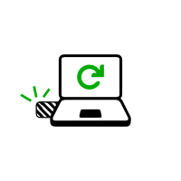
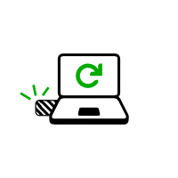

Start in Debian, Ubuntu, or Linux Mint.
Verify the Tails signing key
If you already certified the Tails signing key with your own key, you can skip this step and start downloading and verifying the USB image.
In this step, you will download and verify the Tails signing key which is the OpenPGP key that is used to cryptographically sign the Tails USB image.
To follow these instructions you need to have your own OpenPGP key.
To learn how to create yourself an OpenPGP key, see Managing OpenPGP Keys by Riseup.
This verification technique uses the OpenPGP Web of Trust and the certification made by official Debian developers on the Tails signing key.
Import the Tails signing key in your GnuPG keyring:
wget https://tails.boum.org/tails-signing.key gpg --import < tails-signing.keyInstall the Debian keyring. It contains the OpenPGP keys of all Debian developers:
sudo apt install debian-keyringImport the OpenPGP key of Chris Lamb, a former Debian Project Leader, from the Debian keyring into your keyring:
gpg --keyring=/usr/share/keyrings/debian-keyring.gpg --export chris@chris-lamb.co.uk | gpg --importVerify the certifications made on the Tails signing key:
gpg --keyid-format 0xlong --check-sigs A490D0F4D311A4153E2BB7CADBB802B258ACD84FIn the output of this command, look for the following line:
sig! 0x1E953E27D4311E58 2020-03-19 Chris Lamb <chris@chris-lamb.co.uk>Here,
sig!, with an exclamation mark, means that Chris Lamb verified and certified the Tails signing key with his key.It is also possible to verify the certifications made by other people. Their name and email address appear in the list of certification if you have their key in your keyring.
If the verification of the certification failed, then you might have downloaded a malicious version of the Tails signing key or our instructions might be outdated. Please get in touch with us.
The line `175 signatures not checked due to missing keys` or similar refers to the certifications (also called *signatures*) made by other public keys that are not in your keyring. This is not a problem.
Certify the Tails signing key with your own key:
gpg --lsign-key A490D0F4D311A4153E2BB7CADBB802B258ACD84F
Download and verify the USB image
In this step, you will download the latest Tails USB image and verify it using the Tails signing key.
Download the USB image:
wget --continue http://dl.amnesia.boum.org/tails/stable/tails-amd64-4.23/tails-amd64-4.23.img
Download the signature of the USB image:
wget https://tails.boum.org/torrents/files/tails-amd64-4.23.img.sig
Verify that the USB image is signed by the Tails signing key:
TZ=UTC gpg --no-options --keyid-format long --verify tails-amd64-4.23.img.sig tails-amd64-4.23.img
The output of this command should be the following:
gpg: Signature made 2021-09-06T15:32:35 UTC
gpg: using RSA key 05469FB85EAD6589B43D41D3D21DAD38AF281C0B
gpg: Good signature from "Tails developers (offline long-term identity key) <tails@boum.org>" [full]
gpg: aka "Tails developers <tails@boum.org>" [full]
Verify in this output that:
- The date of the signature is the same.
- The signature is marked as
Good signaturesince you certified the Tails signing key with your own key.
Install Tails using dd
Make sure that the USB stick on which you want to install Tails is unplugged.
Execute the following command:
ls -1 /dev/sd?
It returns a list of the storage devices on the system. For example:
/dev/sda
Plug in the USB stick on which you want to install Tails.
All the data on this USB stick will be lost.
Execute again the same command:
ls -1 /dev/sd?
Your USB stick appears as a new device in the list.
/dev/sda /dev/sdb
Take note of the device name of your USB stick.
In this example, the device name of the USB stick is /dev/sdb. Yours might be different.
If you are unsure about the device name, you should stop proceeding or you risk overwriting any hard disk on the system.
Execute the following commands to copy the USB image that you downloaded earlier to the USB stick.
Replace:
tails.img with the path to the USB image
device with the device name found in step 5
dd if=tails.img of=device bs=16M oflag=direct status=progress
You should get something like this:
dd if=/home/user/tails-amd64-3.12.img of=/dev/sdb bs=16M oflag=direct status=progress
If no error message is returned, Tails is being copied on the USB stick. The copy takes some time, generally a few minutes.
If you get a Permission denied error, try adding
sudoat the beginning of the command:sudo dd if=tails.img of=device bs=16M oflag=direct status=progress
The installation is complete after the command prompt reappears.

Congratulations, you have installed Tails on your USB stick!
You will now restart your computer on this USB stick. It can be a bit complicated, so good luck! But it might not work on your Mac model, so good luck!
If you are already in Tails, go directly to step 3: Verify that the other Tails is up-to-date.
Open these instructions on another device
In the next step, you will shut down the computer. To be able to follow the rest of the instructions afterwards, we recommend you either:


Open this page on your smartphone, tablet, or another computer (recommended).
Print the rest of the instructions on paper.
Take note of the URL of this page to be able to come back later:
https://tails.boum.org/install/clone?back=1https://tails.boum.org/install/win/usb?back=1https://tails.boum.org/install/mac/usb?back=1https://tails.boum.org/install/mac/clone?back=1https://tails.boum.org/install/expert/usb?back=1https://tails.boum.org/install/linux/usb?back=1https://tails.boum.org/upgrade/clone?back=1https://tails.boum.org/upgrade/tails?back=1https://tails.boum.org/upgrade/win?back=1https://tails.boum.org/upgrade/mac?back=1https://tails.boum.org/upgrade/linux?back=1
Restart on the intermediary Tails
Restart on the other Tails
Restart on Tails

 


Make the computer start on the USB stick
Click on the Start
 button.
button.Press and hold the Shift key while you choose Power ▸ Restart.
In the Choose an option screen, choose Use a device.

If the Choose an option screen does not appear, refer to the instructions on starting Tails using the Boot Menu key.
In the Use a device screen, choose Boot Menu.
Windows shuts down, the computer restarts, and a Boot Menu appears.
Plug in your Tails USB stick shortly after choosing Boot Menu and while Windows is shutting down.
In the future, we We recommend that you only plug in your Tails USB stick while Windows is shutting down. Otherwise, a virus in Windows could infect your Tails USB stick and break its security.
Such an attack is possible in theory but very unlikely in practice. We don't know of any virus capable of infecting Tails. See our warning on plugging Tails in untrusted systems.
The Boot Menu is a list of possible devices to start from. The following screenshot is an example of a Boot Menu:

In the Boot Menu, select your USB stick and press Enter.
If the computer starts on Tails, the Boot Loader appears and Tails starts automatically after 4 seconds.

Most computers do not start on the Tails USB stick automatically but you can press a Boot Menu key to display a list of possible devices to start from.
If Windows 8 or 10 is also installed on the computer, you can refer instead to the instructions on starting Tails from Windows 8 or 10. Starting Tails from Windows is easier than using the Boot Menu key.
The following screenshot is an example of a Boot Menu:
This animation summarizes how to use the Boot Menu key to start on the USB stick:
The following instructions explain in detail how to use the Boot Menu key to start on the USB stick:
-
Shut down the computer while leaving the USB stick plugged in.
Shut down the computer and plug in the Tails USB stick.
Shut down the computer.
Plug in the other Tails USB stick that you want to install upgrade from.
Unplug your Tails USB stick while leaving the intermediary USB stick plugged in.
-
Identify the possible Boot Menu keys for the computer depending on the computer manufacturer in the following list:
Manufacturer Key Acer F12, F9, F2, Esc Apple Option Asus Esc Clevo F7 Dell F12 Fujitsu F12, Esc HP F9 Huawei F12 Intel F10 Lenovo F12 MSI F11 Samsung Esc, F12, F2 Sony F11, Esc, F10 Toshiba F12 others… F12, Esc On many computers, a message is displayed very briefly when switching on that also explains how to get to the Boot Menu or edit the BIOS settings.
-
Switch on the computer and immediately press several times the first possible Boot Menu key identified in step 2.
-
If the computer starts on another operating system or returns an error message, shut down the computer again and repeat step 3 for all the possible Boot Menu keys identified in step 2.
If a Boot Menu with a list of devices appears, select your USB stick and press Enter.
If the computer starts on Tails, the Boot Loader appears and Tails starts automatically after 4 seconds.
-
Shut down the computer while leaving the USB stick plugged in.
Plug in the other Tails USB stick that you want to install from.
-
Switch on the computer and immediately press-and-hold the Option key (Alt key) until a list of possible startup disks appears.

-
Choose the USB stick and press Enter. The USB stick appears as an external hard disk and might be labeled EFI Boot or Windows like in the following screenshot:

If the USB stick does not appear in the list of startup disks:
- Make sure that you have verified your download of Tails.
- Try installing again on the same USB stick.
- Try installing on a different USB stick.
- Try using the same USB stick to start on a different computer.
If your computer still does not display the Boot Loader, it might currently be impossible to start Tails on your computer.
-
If your Mac displays the following error:
Security settings do not allow this Mac to use an external startup disk.
Then you have to change the settings of the Startup Security Utility of your Mac to authorize starting from Tails.
To open Startup Security Utility:
Turn on your Mac, then press and hold Command(⌘)+R immediately after you see the Apple logo. Your Mac starts up from macOS Recovery.
When you see the macOS Utilities window, choose Utilities ▸ Startup Security Utility from the menu bar.
When you are asked to authenticate, click Enter macOS Password, then choose an administrator account and enter its password.

In the Startup Security Utility:
Choose No Security in the Secure Boot section.
Choose Allow booting from external media in the External Boot.
To still protect your Mac from starting on untrusted external media, you can set a firmware password, available on macOS Mountain Lion or later. A firmware password prevents users who do not have the password from starting up from any media other than the designated startup disk.
If you forget your firmware password you will require an in-person service appointment with an Apple Store or Apple Authorized Service Provider.
Read more on Apple Support about:
If the computer starts on Tails, the Boot Loader appears and Tails starts automatically after 4 seconds.
Troubleshooting
-
If no Boot Menu appears, or if your USB stick is not listed in the Boot Menu, refer to the instructions on starting Tails using the Boot Menu key.
-
If none of the possible Boot Menu keys from the previous technique work, or if your USB stick is not listed in the Boot Menu, refer to the troubleshooting instructions about Tails not starting at all.
-
If your USB stick is listed in the Boot Menu but the Boot Loader does not appear, or if Tails fails to start after the Boot Loader:
If your USB stick appears in the list of startup disks but the Boot Loader does not appear, or if Tails fails to start after the Boot Loader:
- Make sure that you have verified your download of Tails.
- Try installing again on the same USB stick.
- Try installing on a different USB stick.
- Try using the same USB stick to start on a different computer.
If your computer still does not display the Boot Loader, it might currently be impossible to start Tails on your computer.
-
If the computer stops responding or displays other error messages before getting to the Welcome Screen, refer to the troubleshooting section about Tails not starting after the Boot Loader. the troubleshooting section about Tails not starting after the Boot Loader.
-
If the computer displays the error message Error starting GDM with your graphics card, refer to our list of known issues with graphics cards.
Starting the computer using a Boot Menu key can be faster than starting the computer on Windows first and then on Tails. We recommend you learn how to start Tails using the Boot Menu key if you use Tails regularly.
Welcome Screen
One to two minutes after the Boot Loader, the Welcome Screen appears.

In the Welcome Screen, select your language and keyboard layout in the Language & Region section. Click Start Tails.
After 15–30 seconds, the Tails desktop appears.

Test your Wi-Fi
Problems with Wi-Fi are unfortunately quite common in Tails and Linux in general. To test if your Wi-Fi interface works in Tails:
Open the system menu in the top-right corner:

Choose Wi-Fi Not Connected and then Select Network.
After establishing a connection to a local network, the Tor Connection assistant appears to help you connect to the Tor network.

If your Wi-Fi interface is not working, either:
There is no Wi-Fi option in the system menu:

The interface is disabled when starting Tails or when plugging in your USB Wi-Fi adapter:

In this case, you can disable MAC address anonymization to get your Wi-Fi interface to work in Tails. Disabling MAC address anonymization has security implications, so read carefully our documentation about MAC address anonymization before doing so.
To connect to the Internet, you can try to:
Use an Ethernet cable instead of Wi-Fi if possible. Wired interfaces work much more reliably than Wi-Fi in Tails.
Share the Wi-Fi or mobile data connection of your phone using a USB cable. Sharing a connection this way is called USB tethering.

See instructions for:
iPhones or iPads
Only sharing mobile data works on iPhones and iPads; sharing Wi-Fi does not work.
Tails cannot hide the information that identifies your phone on the local network. If you connect your phone to:
A Wi-Fi network, then the network will know the MAC address of your phone. This has security implications that are discussed in our documentation on MAC address anonymization. Some phones have a feature to hide the real MAC address of the phone.
A mobile data network, then the network will be able to know the identifier of your SIM card (IMSI) and also the serial number of your phone (IMEI).
Buy a USB Wi-Fi adapter that works in Tails:
Vendor Model Size Speed Price Buy offline Buy online Panda Wireless Ultra Nano 150 Mbit/s $12 No Amazon Panda Wireless PAU05 Small 300 Mbit/s $14 No Amazon If you find another USB Wi-Fi adapter that works in Tails, please let us know. You can write to sajolida@pimienta.org (private email).
Yay, you managed to start your new Tails on your computer!
If you want to save some of your documents and configuration in an encrypted storage on your new Tails USB stick, follow our instructions until the end. Otherwise, have a look at our final recommendations. final recommendations. final recommendations. final recommendations. final recommendations. final recommendations.
Create a Persistent Storage (optional)
You can optionally create an encrypted Persistent Storage in the remaining free space on your new Tails USB stick to store any of the following:
- Personal files
- Some settings
- Additional software
- Encryption keys
The data in the Persistent Storage:
- Remains available across separate working sessions.
- Is encrypted using a passphrase of your choice.
The Persistent Storage is not hidden. An attacker in possession of your USB stick can know that there is a Persistent Storage on it. Take into consideration that you can be forced or tricked to give out its passphrase.
It is possible to unlock the Persistent Storage from other operating systems. But, doing so might compromise the security provided by Tails.
For example, image thumbnails might be created and saved by the other operating system. Or, the contents of files might be indexed by the other operating system.
Other operating systems should probably not be trusted to handle sensitive information or leave no trace.
Create the Persistent Storage
Choose .
Specify a passphrase of your choice in both the Passphrase and Verify Passphrase text boxes.
We recommend choosing a long passphrase made of five to seven random words. Learn more.
Click on the Create button.
Wait for the creation to finish.
The list of features of the Persistent Storage appears. Each feature corresponds to a set of files or settings that can be saved in the Persistent Storage.
We recommend you to only turn on the Personal Data feature for the time being. You can turn on more features later on according to your needs.
Click Save.
Restart and unlock the Persistent Storage
Shut down the computer and restart on your new Tails USB stick.
In the Welcome Screen:

Select your language and keyboard layout in the Language & Region section.
In the Encrypted Persistent Storage section, enter your passphrase and click Unlock to unlock the Persistent Storage for the current working session.
Click Start Tails.
After 15–30 seconds, the Tails desktop appears.
You can now save your personal files and working documents in the Persistent folder. To open the Persistent folder choose .

You now have a complete Tails, congrats!
Final recommendations
Tails does not protect you from everything! Have a look at our warnings.
You should regularly make a backup of your Persistent Storage in case your Tails USB stick becomes lost or damaged.
We hope you enjoy using Tails :)